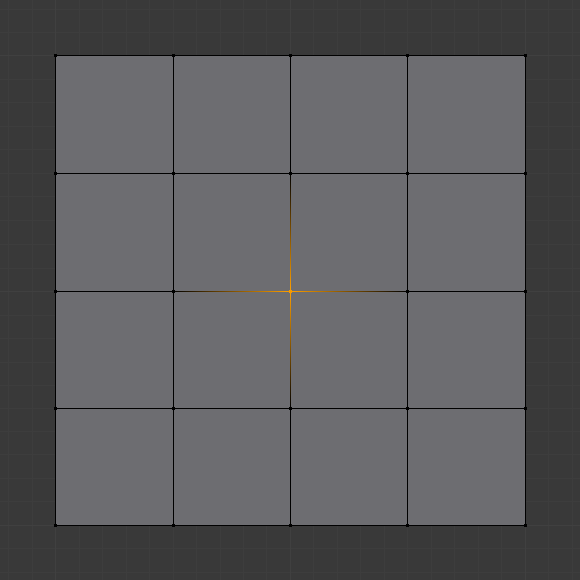
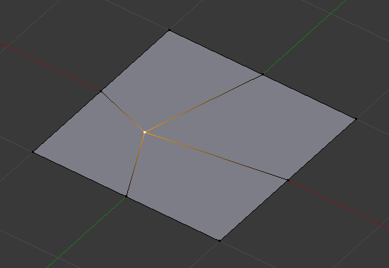

Vertex Tools¶
Reference
| Mode: | Edit Mode |
|---|---|
| Menu: | |
| Hotkey: | Ctrl-V |
This page covers many of the tools in the menu. These are tools that work primarily on vertex selections, however, some also work with edge or face selections.
Merging¶
Merging Vertices¶
Reference
| Mode: | Edit Mode |
|---|---|
| Menu: | , |
| Hotkey: | Alt-M |
This tool allows you to merge all selected vertices to a unique one, dissolving all others. You can choose the location of the surviving vertex in the menu this tool pops up before executing:
- At First
- Only available in Vertex select mode, it will place the remaining vertex at the location of the first one selected.
- At Last
- Only available in Vertex select mode, it will place the remaining vertex at the location of the last one selected (the active one).
- At Center
- Available in all select modes, it will place the remaining vertex at the center of the selection.
- At Cursor
- Available in all select modes, it will place the remaining vertex at the 3D Cursor.
- Collapse
- Every island of selected vertices (connected by selected edges) will merge on its own median center, leaving one vertex per island. It is also available via the menu option…
Merging vertices of course also deletes some edges and faces. But Blender will do everything it can to preserve edges and faces only partly involved in the reunion.
Note
At First and At Last depend on that the selection order is saved: the order is lost, for instance, after changing selection mode.
- UVs
- If UVs is ticked in the Adjust Last Operation panel, the UV mapping coordinates, if existing, will be corrected to avoid image distortion.
Auto Merge¶
Reference
| Mode: | Edit Mode |
|---|---|
| Menu: |
When the Auto Merge option is enabled, as soon as a vertex moves closer to another one than the Threshold setting, they are automatically merged. This option affects interactive operations only (tweaks made in the Adjust Last Operation panel are considered interactive too). If the exact spot where a vertex is moved contains more than one vertex, then the merge will be performed between the moved vertex and one of those.
Merge by Distance¶
Reference
| Mode: | Edit Mode |
|---|---|
| Menu: | , |
Merge by Distance is a useful tool to simplify a mesh by merging the selected vertices that are closer than a specified distance to each other. An alternative way to simplify a mesh is to use the Decimate Modifier.
- Merge Distance
- Sets the distance threshold for merging vertices.
- Unselected
- Allows vertices in selection to be merged with unselected vertices. When disabled, selected vertices will only be merged with other selected ones.
Separating¶
Rip Region¶
Reference
| Mode: | Edit Mode |
|---|---|
| Menu: | |
| Hotkey: | V |
Rip creates a “hole” into a mesh by making a copy of selected vertices and edges, still linked to the neighbor non-selected vertices, so that the new edges are borders of the faces on one side, and the old ones, borders of the faces of the other side of the rip.
Examples¶

Selected vertex. |

Hole created after using rip on vertex. |

Edges selected. |

Result of rip with edge selection. |

A complex selection of vertices. |

Result of rip operation. |
{kind=link}
Limitations¶
Rip will only work when edges and/or vertices are selected. Using the tool when a face is selected (explicitly or implicitly), will return an error message “Cannot perform ripping with faces selected this way”. If your selection includes some edges or vertices that are not “between” two faces manifold, it will also fail with message “No proper selection or faces include”.
Rip Vertices and Fill¶
Reference
| Mode: | Edit Mode |
|---|---|
| Menu: | |
| Hotkey: | Alt-V |
Rip fill works the same as the Rip tool above, but instead of leaving a hole, it fills in the gap with geometry.
|
Edges selected. |

Result of rip fill. |
Split¶
Reference
| Mode: | Edit Mode |
|---|---|
| Menu: | |
| Hotkey: | Y |
Splits (disconnects) the selection from the rest of the mesh. The border edge to any non-selected elements are duplicated.
Note that the “copy” is left exactly at the same position as the original, so you must move it G to see it clearly…
Rip Edge¶
Reference
| Mode: | Edit Mode |
|---|---|
| Menu: | |
| Hotkey: | Alt-D |
This tool takes any number of selected vertices and duplicate-drags them along the closest edge to the mouse, When extending an edge loop, it extends the vertices at the endpoints of the loop. Which is similar behavior like Extrude tool, but it creates an n-gon.
It helps to easily add details to existing edges.
Separate¶
Reference
| Mode: | Edit Mode |
|---|---|
| Menu: | |
| Hotkey: | P |
The Separate tool will Split mesh elements in another mesh object.
- Selection
- Separates the selected elements.
- By Material
- Separates fragments based on the materials assigned to the different faces.
- By loose parts
- Creates one object for every independent (disconnected) fragment of the original mesh.
Vertex Slide¶
Reference
| Mode: | Edit Mode |
|---|---|
| Menu: | |
| Hotkey: | Shift-V |
Vertex Slide will transform a vertex along one of its adjacent edges. Use Shift-V to activate tool. The nearest selected vertex to the mouse cursor will be the control one. Move the mouse along the direction of the desired edge to specify the vertex position. Then press LMB to confirm the transformation.
- Even E
- By default, the offset value of the vertices is a percentage of the edges length along which they move. When Even mode is active, the vertices are shifted by an absolute value.
- Flipped F
- When Flipped is active, vertices move the same distance from adjacent vertices, instead of moving from their original position.
- Clamp Alt or C
- Toggle clamping the slide within the edge extents.

Selected vertex. |

Positioning vertex interactively. |

Repositioned vertex. |
{kind=link}
Convex Hull¶
Reference
| Mode: | Edit Mode |
|---|---|
| Menu: |
The Convex Hull operator takes a point cloud as input and outputs a convex hull surrounding those vertices. If the input contains edges or faces that lie on the convex hull, they can be used in the output as well. This operator can be used as a bridge tool as well.
Input mesh, point cloud, and Convex Hull result.
- Delete Unused
- Removes vertices, edges, and faces that were selected, but not used as part of the hull. Note that vertices and edges that are used by other edges and faces not part of the selection will not be deleted.
- Use Existing Faces
- Where possible, use existing input faces that lie on the hull. This allows the convex hull output to contain n-gons rather than triangles (or quads if the Join Triangles option is enabled).
- Make Holes
- Delete edges and faces in the hull that were part of the input too. Useful in cases like bridging to delete faces between the existing mesh and the convex hull.
- Join Triangles
- Joins adjacent triangles into quads. Has all the same properties as the Tris to Quads operator (angle limit, compare UVs, etc.).
- Max Face Angle, Max Shape Angle, Compare
- See Triangles to Quads.
Make Vertex Parent¶
Reference
| Mode: | Edit Mode |
|---|---|
| Menu: | |
| Hotkey: | Ctrl-P |
This will parent the other selected object(s) to the vertices/edges/faces selected, as described here.
Add Hook¶
Reference
| Mode: | Edit Mode |
|---|---|
| Menu: | |
| Hotkey: | Ctrl-H |
Adds a Hook Modifier (using either a new empty, or the current selected object) linked to the selection. Note that even if it appears in the history menu, this action cannot be undone in Edit Mode – because it involves other objects…
When the current object has no hooks associated, only the 2 first options will appear on the menu.
- Hook to New Object
- Creates a new Hook Modifier for the active object and assigns it to the selected vertices; it also creates an empty at the center of those vertices, which are hooked to it.
- Hook to Selected Object
- Does the same as Hook to New Object, but instead of hooking the vertices to a new empty, it hooks them to the selected object (if it exists). There should be only one selected object (besides the mesh being edited).
- Hook to Selected Object Bone
- Does the same as Hook to New Object, but it sets the last selected bone in the also selected armature as a target.
- Assign to Hook
- The selected vertices are assigned to the chosen hook. For that to happen, a list of the hooks associated to the object is displayed. All the unselected vertices are removed from it (if they were assigned to that particular hook). One vertex can be assigned to more than one hook.
- Remove Hook
- Removes the chosen hook (from the displayed list) from the object: the specific Hook Modifier is removed from the modifier stack.
- Select Hook
- Selects all vertices assigned to the chosen hook (from the hook list).
- Reset Hook
- It’s equivalent to the Reset button of the specific Hook Modifier (chosen from the hook list).
- Recenter Hook
- It’s equivalent to the Recenter button of the specific Hook Modifier (chosen from the hook list).
Blend From Shape, Propagate Shapes¶
Reference
| Mode: | Edit Mode |
|---|---|
| Menu: | and |
These are options regarding shape keys.
- Shape Propagate
- Apply selected vertex locations to all other shape keys.
- Blend From Shape
- Blend in the shape from a shape key.